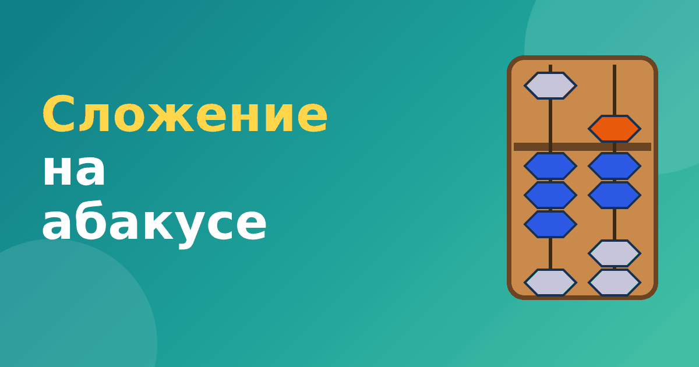

Сложение на абакусе: как складывать числа бусинами

Сложение — первое действие, которому учит абакус. Идея проста: чтобы прибавить число, добавляем нужные бусины. Но бусин на стержне ограниченное количество, поэтому в какой-то момент их не хватает. Именно здесь появляются правила, которые школы называют «помощь брата» и «помощь друга». Разберём сложение на абакусе по порядку, от самого простого.
Простое сложение: бусин хватает
Самый лёгкий случай — когда нужные бусины есть. Тогда просто прижимаем их к перекладине.
- 1 + 2 = 3. На стержне одна нижняя бусина. Прижимаем ещё две нижние, получаем три.
- 5 + 3 = 8. На стержне верхняя бусина. Прижимаем три нижние: 5 + 3 = 8.
- 3 + 6 = 9. На стержне три нижние. Прижимаем верхнюю (это 5) и одну нижнюю (это 1): 3 + 5 + 1 = 9.
Каждое действие выполняется по одному стержню. Верхняя бусина всегда прибавляет пять, нижняя — одну.
Складываем многозначные числа
Для многозначных чисел складываем разряды по очереди, начиная со старшего (слева). Например, 23 + 14. Набираем 23: на левом стержне 2, на правом 3. Теперь прибавляем 14. К левому стержню добавляем 1 десяток: было 2, стало 3. К правому добавляем 4 единицы: было 3, нижних бусин не хватает, значит нужен приём. Но об этом чуть позже. Сначала посмотрим на пример, где всё проходит без трудностей: 21 + 14. Левый стержень: 2 + 1 = 3, правый: 1 + 4 = 5. Ответ 35.
Когда бусин не хватает
Теперь пример: на стержне цифра 4 (все четыре нижние бусины прижаты), и нужно прибавить 3. Нижних бусин больше нет. Как поступить? Здесь работают два приёма.
- Если не хватает нижних бусин, но можно использовать верхнюю, применяем помощь брата. Прибавляем 5 и убираем лишнее. Подробно: помощь брата на абакусе.
- Если сумма цифр на стержне становится 10 или больше, применяем помощь друга. Прибавляем десяток на стержне слева и убираем нужное число справа. Подробно: помощь друга на абакусе.
Как выбрать, какое правило использовать
Спросите себя: можно ли просто добавить нужные бусины на этом стержне? Если да, правила не нужны. Если нет, считаем сумму цифры и прибавляемого.
- Сумма меньше 5 или не больше 9, но не хватает бусин: помощь брата. Пример 4 + 3 = 7: прибавляем верхнюю (5) и убираем 2 нижних, потому что 5 − 2 = 3.
- Сумма 10 или больше: помощь друга. Пример 8 + 5 = 13: добавляем 1 на стержень десятков, а на стержне единиц убираем 5, потому что 10 − 5 = 5, и из 8 остаётся 3.
Проверим второй пример: на стержне единиц было 8, после действия осталась цифра 3, на соседнем стержне прибавилась единица. Получилось 13. Всё верно.
Ошибки, которые встречаются чаще всего
- Ребёнок прибавляет, но забывает убрать лишнее. Тогда ответ получается больше нужного. Проверка простая: сравните с числом в уме.
- Забывают про десяток. В правиле «помощь друга» главное — вовремя добавить единицу на соседний стержень.
- Начинают с правого стержня. Хотя в школе привычно складывать с единиц, на абакусе обычно идут слева направо. Поэтому важно держаться одного порядка.
Пример целиком: 47 + 38
Разберём один пример от начала до конца. Набираем 47: 4 на левом стержне, 7 на правом. Прибавляем 38. Сначала десятки: на левом стержне было 4, прибавляем 3, получается 7. Теперь единицы: на правом стержне 7, прибавляем 8. Сумма 15, значит, нужна помощь друга: добавляем десяток на левый стержень (7 + 1 = 8), а на правом убираем 10 − 8 = 2 единицы. Было 7, осталось 5. На счётах 8 и 5, то есть 85. Проверка: 47 + 38 = 85. Верно.
Видно, что несколько простых движений дают правильный ответ. Если ребёнок сможет объяснить эти шаги вслух, значит, он понимает метод, а не просто повторяет движения.
Частые вопросы
Нужно ли знать таблицу сложения, чтобы считать на абакусе?
Лучше знать хотя бы состав чисел до 10: тогда приёмы брата и друга станут понятнее. Таблицу не обязательно знать наизусть, но ребёнок должен понимать, что значит «прибавить».
С какой скоростью нужно двигать бусины?
Скорость не главное. Сначала точность и понимание правил, а скорость вырастет сама после нескольких недель практики.
Как тренировать сложение
Начните с однозначных примеров, где бусин хватает. Затем добавьте примеры с помощью брата, потом с помощью друга, и только после этого двузначные. Так ребёнок не перегружается новым. В тренажёре «Ментальная арифметика» этот путь разбит на модули: сначала простое сложение, потом с помощью брата, потом с помощью друга. В каждом модуле ребёнок сам двигает бусины, а приложение подсказывает, если шаг сделан неверно.
Если хочется проверить себя перед этим, прочитайте статью числа на абакусе, а для вычитания перейдите к вычитанию на абакусе.